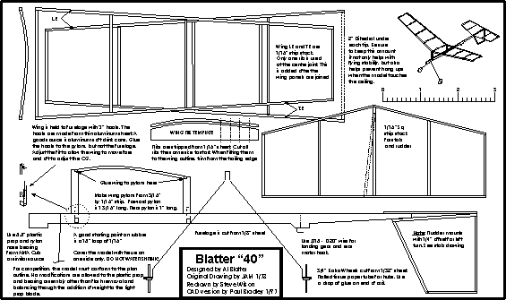

Here are some notes about the Blatter 40 plan, courtesy of Paul Bradley.
"The model was conceived as a one design model for club type indoor low key competition. In this capacity the rules are very simple; the model must conform to the plan outlines, and no modifications are allowed to the plastic prop/bearing other than balancing of the prop through addition of weight (such as clay) and removal of any molding flash. As long as the outlines conform to the plan, wood sizes can be altered in accordance with the desire of the builder. Also, tissue must be used for covering... no films, etc.
When printed, the plan should fit on a standard U.S. Legal Paper sheet of 8.5" by 14". For reference, the individual wing panels are 8" in span with a root chord of 3" and a tip chord of 2". This gives a flat wing area of 40 in sq (hence the "40" in the model's name).
Hopefully, all necessary building notes will be found on the plan. If not, please let me know so I can add any missing information. This model can be built very quickly, and will provide you with a lot of enjoyment. The key is the use of the "commercial" plastic prop and bearing assembly. These can be found in many hobby shops sold separately. They are also used on AMA Cubs which makes the Blatter 40 a very nice second model after the Cub for beginners.
I hope you will build one of these great little flyers, and receive the level of enjoyment I have from the many examples I have built. If you do, please let me know via e-mail at BradleyP@ix.netcom.com
Paul Bradley - Fulshear, Texas (near Houston)"
To download a 22kb plan, click here
Copyright 1998, Thayer Syme. All rights reserved